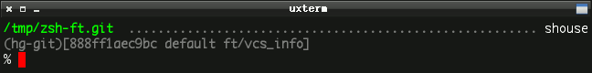
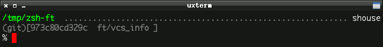
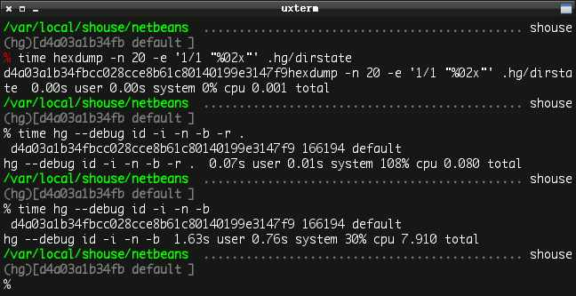
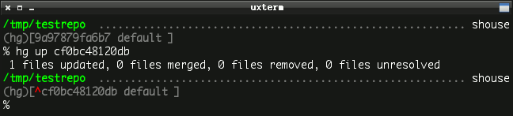
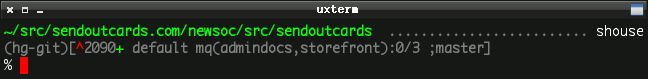

Contents
See also
If you aren’t already familiar with VCS_Info in Zsh, fire up your favorite manpage viewer and read through the section in zshcontrib(1). It allows you to pull information out of a version-controlled repository and display that in your shell prompt.
The big win for VCS_Info over other, similar solutions is that it is built right into Zsh and supports Bazaar, Codeville, CVS, Darcs, Git, GNU arch, GNU quilt, Mercurial, Monotone, Perforce, Subversion, and SVK all using the same configuration. You put it into your prompt once then as you cd between your favorite git, hg, bzr, or svn local clones it Just Works®:
Mercurial (using hg-git):
Git:
It is also highly customizable.
Put the following in your ~/.zshrc:
autoload -Uz vcs_info
zstyle ':vcs_info:*' enable hg git bzr svn
Put ${vcs_info_msg_0_} somewhere in your $PS1.
Test it by going into a local repository directory. Your prompt should look something like this:
you@host ~/src/yourcode (hg)-[default]-
%
Be amazed and suddenly feel compelled to send Frank Terbeck a valentine to say thanks for writing VCS_Info.
The first iteration of the Mercurial VCS_Info backend would display the changeset ID, local revision number, current branch, and the topmost applied mq patch. Here are the new features:
Warning
Many features in VCS_Info are disabled by default for performance reasons. Most of the below styles require customizing your formats and actionformats zstyles at least. Look at my customizations below and give zshcontrib(1) a read before you give up or complain.
Enable Mercurial bookmarks by adding the style:
zstyle ':vcs_info:hg*:*' get-bookmarks true
Knowing if there are changes in your working directory at a glance can be a huge time saver:
zstyle ':vcs_info:hg*:*' check-for-changes true
In very large repositories or on very slow computers, invoking Mercurial every time the prompt is drawn can simply be too slow. You can optionally use the hexdump program to fetch the changeset ID instead which is lightning fast.
For example, the NetBeans repository is 3 GB in size so to enable fast lookup for just that directory:
zstyle ':vcs_info:hg*:netbeans' use-simple true
Here are three time tests in the NetBeans repo to give you an idea of the speed difference. Note that by specifying the current revision with -r . causes Mercurial to ignore the state of the working directory which goes a little faster but doesn’t look for changes.
Note
You cannot retrieve the local revision number with hexdump.
Show when rebasing or merging. Define actionformats:
zstyle ':vcs_info:hg*' actionformats "(%s|%a)[%i%u %b %m]"
Mercurial separates multiple parents with a + by default:
This doesn’t (currently) work with the use-simple setting, although I think the second parent hash is available with hexdump so this may be added in the future.
It can be useful to see when you are in a repo created from another VCS since your workflow is often altered.
Hooks are a great and open-ended way to customize the output. The hooks documentation is really good and worth a read.
For example, I wanted to add a marker to the display when I’m not currently on a branch head:
The hook looks like this:
zstyle ':vcs_info:hg*+set-message:*' hooks hg-storerev hg-branchhead
### Store the localrev and global hash for use in other hooks
function +vi-hg-storerev() {
user_data[localrev]=${hook_com[localrev]}
user_data[hash]=${hook_com[hash]}
}
### Show marker when the working directory is not on a branch head
# This may indicate that running `hg up` will do something
function +vi-hg-branchhead() {
local branchheadsfile i_tiphash i_branchname
local -a branchheads
local branchheadsfile=${hook_com[base]}/.hg/branchheads.cache
# Bail out if any mq patches are applied
[[ -s ${hook_com[base]}/.hg/patches/status ]] && return 0
if [[ -r ${branchheadsfile} ]] ; then
while read -r i_tiphash i_branchname ; do
branchheads+=( $i_tiphash )
done < ${branchheadsfile}
if [[ ! ${branchheads[(i)${user_data[hash]}]} -le ${#branchheads} ]] ; then
hook_com[revision]="${c4}^${c2}${hook_com[revision]}"
fi
fi
}
Note
The reason this functionality isn’t in the core backend is because the branchheads.cache isn’t updated with every hg operation so on occasion it will give a false positive. Most of the time it is Good Enough®.
You can pack quite a lot of information into your prompt (if you want to):
If you are interested, the entirely of my VCS_Info configuration is available on GitHub or BitBucket in my Zsh prompt file.
Here are the important lines (omitting hooks and colors). hg* ensures the same style is applied to hg as well as variants like hg-git, hg-hgsubversion, etc.:
zstyle ':vcs_info:*' enable hg git bzr svn
zstyle ':vcs_info:(hg*|git*):*' get-revision true
zstyle ':vcs_info:(hg*|git*):*' check-for-changes true
# rev+changes branch misc
zstyle ':vcs_info:hg*' formats "(%s)[%i%u %b %m]"
zstyle ':vcs_info:hg*' actionformats "(%s|%a)[%i%u %b %m]"
# hash changes branch misc
zstyle ':vcs_info:git*' formats "(%s)[%12.12i %u %b %m]"
zstyle ':vcs_info:git*' actionformats "(%s|%a)[%12.12i %u %b %m]"
zstyle ':vcs_info:hg*:netbeans' use-simple true
zstyle ':vcs_info:hg*:*' get-bookmarks true
zstyle ':vcs_info:hg*:*' get-mq true
zstyle ':vcs_info:hg*:*' get-unapplied true
zstyle ':vcs_info:hg*:*' patch-format "mq(%g):%n/%c %p"
zstyle ':vcs_info:hg*:*' nopatch-format "mq(%g):%n/%c %p"
zstyle ':vcs_info:hg*:*' unstagedstr "+"
zstyle ':vcs_info:hg*:*' hgrevformat "%r" # only show local rev.
zstyle ':vcs_info:hg*:*' branchformat "%b" # only show branch
These new features are still unreleased (as of Zsh 4.3.10). You don’t have to wait for the next release of Zsh to try them. Full instructions to keep a local checkout from CVS are located in the vcs_info-examples file.
tl;dr:
Download the latest snapshot tarball from the Git mirror and untar it.
Put the Functions/VCS_Info directory from the archive somewhere. ~/.zfuncs is a good place.
Point your Zsh at that directory (requires extended_glob to be set):
fpath=( ~/.zfuncs ~/.zfuncs/VCS_Info/**/*~*/(CVS)#(/) $fpath )
Restart Zsh:
% exec zsh
Posted 1070 days ago on 2010-05-24.